Depending on how the electrical components are arranged in the circuit, we can determine their properties and combine them into equivalent elements, such as total resistance or capacitance.
- Definition: closed loop or path that allows electrical current to flow from a power source, through components, and back to the source.
In a circuit, we can classify the components into different categories.
By their functions:
They supply energy to the circuit by creating a difference of potential.
| 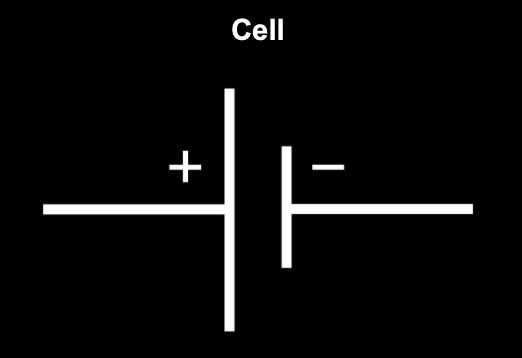 | 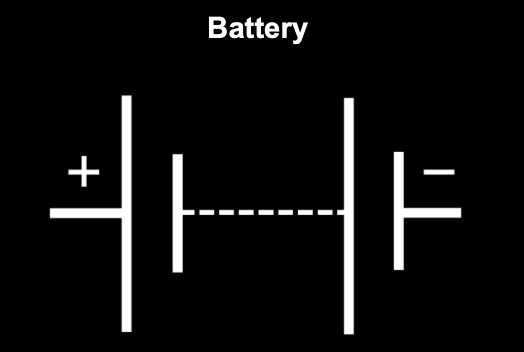 |
They transform the electric energy to generate motion, light, sound, or heat.
| 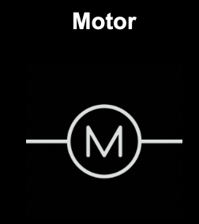 | 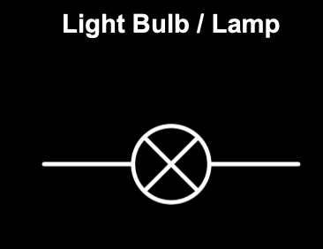 | 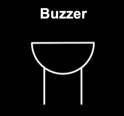 |
They control the flow of electricity or protect the circuit. Some are:
| 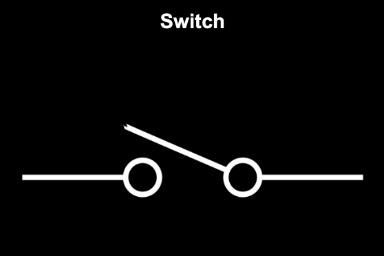 | 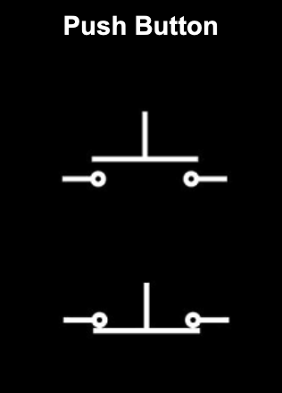 |
They can only receive energy, which it can either dissipate, absorb, or store in an electric field or a magnetic field.
| 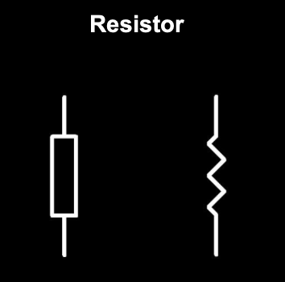 | 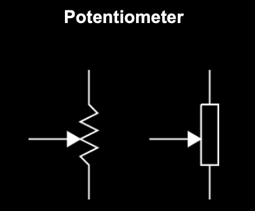 |
| 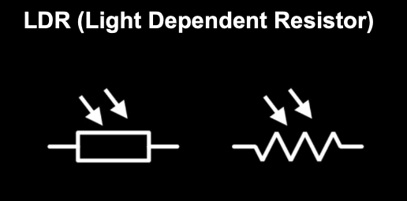 | 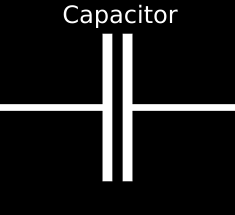 |
They control the flow of current and, or amplify signals.
| 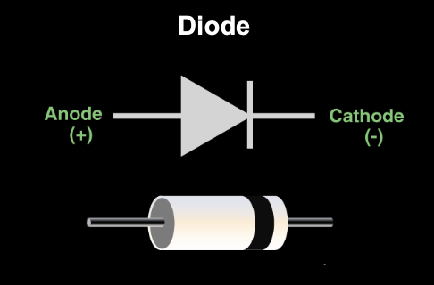 | 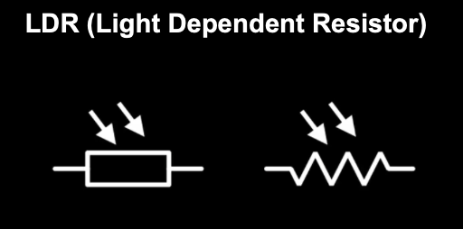 | 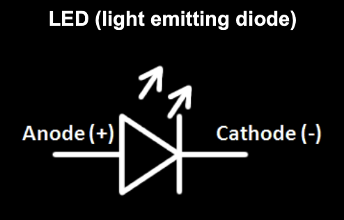 |
Components are connected end to end, creating a single path for current to flow through.
Properties:
When batteries are connected in series and the positive terminal of one battery connects to the negative terminal of the next, the voltages of all the batteries add together. But when batteries are connected in opposition, the positive terminal of one battery is connected to the positive terminal of the other, or the negative to negative, effectively reversing one battery relative to the other, the voltages subtract.
\(V_{eq} = V_1 \; \pm \; V_2 \; \pm \; ... \; \pm \; V_n\)
When resistors are connected in series, the same current flows through each of them. In this arrangement, the total or equivalent resistance is simply the sum of the individual resistances.
\(R_{eq} = R_1 + R_2 \; + \; ... \; + \; R_n\)
Current flows through multiple paths, creating branches.
Properties:
When batteries of the same voltage are connected in parallel, the total voltage equals the value of one.
\(V_{eq} = V_1 = V_2 = ... = V_n\)
When resistors are connected in parallel, they’re all under the same voltage and the inverse of the equivalent resistance equals the sum of the inverses of the individual resistances:
\(\frac{1}{R_{eq}} = \frac{1}{R_1} + \frac{1}{R_2} + ... + \frac{1}{R_n}\)
This is something we must apply to understand how the different devices that we use to measure electrical parameters work:
Voltmeters are used to measure voltage at a certain point, therefore they’re connected in parallel. To assure that it doesn’t affect the rest of the circuit, they have an elevated internal resistance. This way, minimal current flows through the branch.
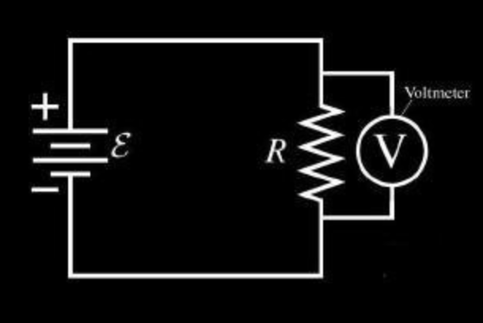Ammeters are used to measure the intensity flowing at a certain point, hence they’re connected in series. In order to avoid an affection to the circuit, they have a really low resistance.
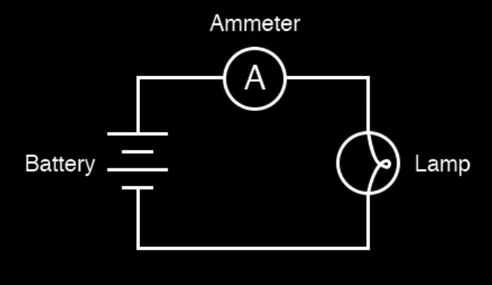Written by Sofia Osorio